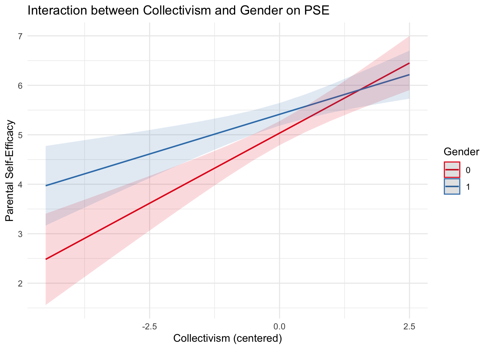

I remember learning a cool way to plot moderation analysis. So, I want to try to do that using my thesis data again. I did not include these analyses in my thesis, but I could explore it here. First, load libraries and data.
I would like to explore parents’ gender as a moderator of the relationship between individualism/collectivism and PSE.
One thing to note that the levels for my gender variable is 1 and 2, so I will change that into 0 and 1 first.
SYP <- SYP %>%
mutate(
Gender01 = if_else(Gender12 == 1, 0, 1),
Gender_label = factor(Gender01, levels = c(0, 1), labels = c("male", "female"))
)Next, I will mean center the continuous variable, so that I can interpret it later.
Now, the data is ready for running moderation analysis.
##
## Call:
## lm(formula = PSE_FD ~ ind_c * Gender01, data = SYP)
##
## Residuals:
## Min 1Q Median 3Q Max
## -4.7368 -0.7747 0.2517 0.9360 2.3258
##
## Coefficients:
## Estimate Std. Error t value Pr(>|t|)
## (Intercept) 5.06912 0.13390 37.857 <2e-16 ***
## ind_c 0.22594 0.11710 1.929 0.0551 .
## Gender01 0.30946 0.18396 1.682 0.0941 .
## ind_c:Gender01 0.08475 0.16776 0.505 0.6140
## ---
## Signif. codes: 0 '***' 0.001 '**' 0.01 '*' 0.05 '.' 0.1 ' ' 1
##
## Residual standard error: 1.297 on 198 degrees of freedom
## (2 observations deleted due to missingness)
## Multiple R-squared: 0.06846, Adjusted R-squared: 0.05434
## F-statistic: 4.85 on 3 and 198 DF, p-value: 0.002803According to the output, we cannot conclude that fathers and mothers differed in the relationship between individualism and PSE.
##
## Call:
## lm(formula = PSE_FD ~ col_c * Gender01, data = SYP)
##
## Residuals:
## Min 1Q Median 3Q Max
## -4.3678 -0.6042 0.2497 0.8510 2.4008
##
## Coefficients:
## Estimate Std. Error t value Pr(>|t|)
## (Intercept) 5.0335 0.1231 40.893 < 2e-16 ***
## col_c 0.5670 0.1000 5.668 5.06e-08 ***
## Gender01 0.3804 0.1691 2.249 0.0256 *
## col_c:Gender01 -0.2462 0.1325 -1.858 0.0646 .
## ---
## Signif. codes: 0 '***' 0.001 '**' 0.01 '*' 0.05 '.' 0.1 ' ' 1
##
## Residual standard error: 1.2 on 198 degrees of freedom
## (2 observations deleted due to missingness)
## Multiple R-squared: 0.2035, Adjusted R-squared: 0.1915
## F-statistic: 16.87 on 3 and 198 DF, p-value: 8.497e-10The result shows that:
1. For males, 1-unit increase in collectivism (from the mean) was
associated with 0.57-unite increase in PSE.
2. At the mean level of collectivism, females (coded as 1) were
significantly higher in PSE than males (coded as 0).
3. The interaction term was marginally significant. The relationship
between collectivism and PSE was weaker by -0.25-unit in females than
males.
I will try to plot this relationship using ggeffects package.
colPSE <- ggpredict(model2, terms = c("col_c", "Gender01"))
plot(colPSE) +
labs(x = "Collectivism (centered)",
y = "Parental Self-Efficacy",
title = "Interaction between Collectivism and Gender on PSE",
color = "Gender"
) +
theme_minimal()
From the graph we can also see that the blue slope (female) is less steep than the red slope (male). Even though it’s only marginally significant, I still plotted it.
What if I add SES as another moderator?
##
## Call:
## lm(formula = PSE_FD ~ col_c * Gender01 * SES01, data = SYP)
##
## Residuals:
## Min 1Q Median 3Q Max
## -4.4072 -0.6768 0.2826 0.8526 2.0855
##
## Coefficients:
## Estimate Std. Error t value Pr(>|t|)
## (Intercept) 5.29728 0.21916 24.171 <2e-16 ***
## col_c 0.36184 0.17466 2.072 0.0396 *
## Gender01 0.17621 0.28064 0.628 0.5308
## SES01 -0.37906 0.26485 -1.431 0.1540
## col_c:Gender01 -0.01933 0.21207 -0.091 0.9275
## col_c:SES01 0.29996 0.21306 1.408 0.1608
## Gender01:SES01 0.26858 0.35347 0.760 0.4483
## col_c:Gender01:SES01 -0.35135 0.27521 -1.277 0.2033
## ---
## Signif. codes: 0 '***' 0.001 '**' 0.01 '*' 0.05 '.' 0.1 ' ' 1
##
## Residual standard error: 1.199 on 194 degrees of freedom
## (2 observations deleted due to missingness)
## Multiple R-squared: 0.2205, Adjusted R-squared: 0.1924
## F-statistic: 7.84 on 7 and 194 DF, p-value: 2.334e-08There is no significant three-way interaction.